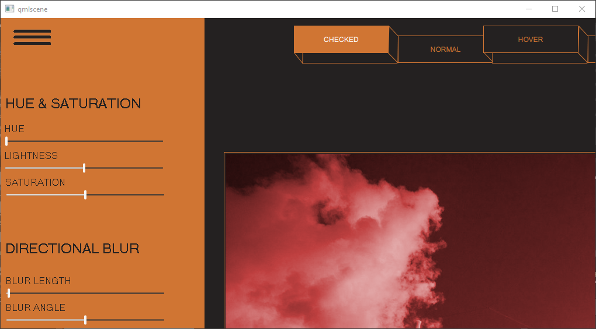
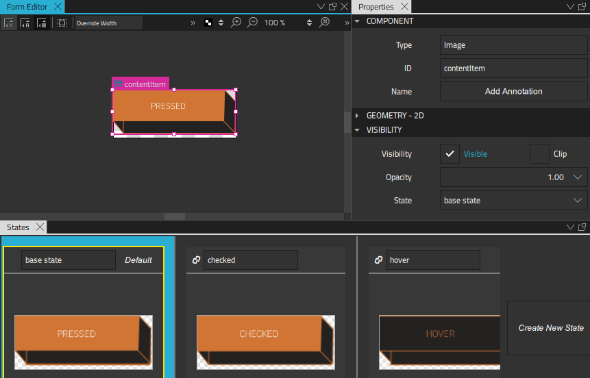
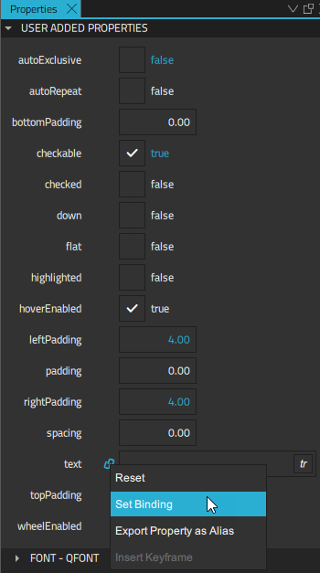
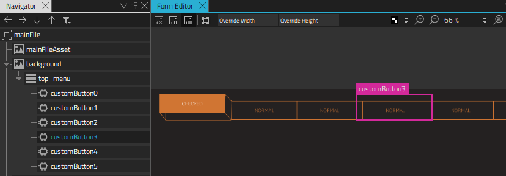
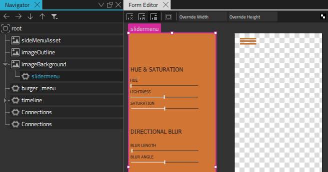
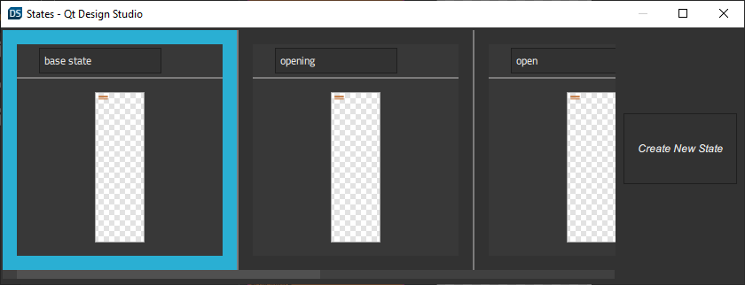
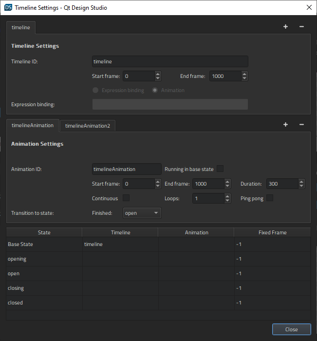
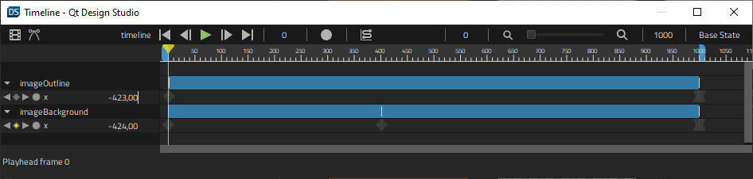
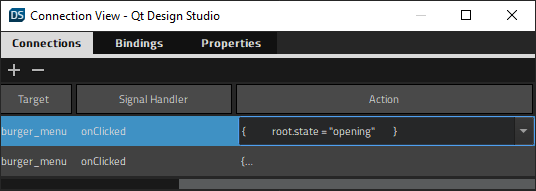
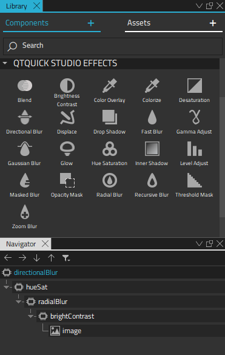

Side Menu
Illustrates how to create reusable components and an animated menu for applying 2D visual effects in Qt 5 projects.

Side Menu displays a menu bar and a side menu that slides open when users click the menu icon. The appearance of the menu bar buttons changes when users hover the cursor over them or select them.
Each button opens an image file. The side menu can be used to apply graphical effects, such as hue, saturation, and blur, to the images.
Note: Only a subset of effects is available if you select Qt 6 when creating the project.
Creating Reusable Buttons
We select File > New File > Qt Quick Controls > Custom Button to create a reusable menu bar button that we call CustomButton.
The button can have the following states: checked, hover, pressed, and normal. We construct the button using different images for the button background, frame, and front. We then add states in the States view for each of the button states. In each state, we turn the visibility of the appropriate images on or off in the button properties, to change the appearance of the button.

To change the button text when the button state changes, we bind the text property to the state of the button in the Properties view. When control is selected in the Navigator, we select the Actions menu for the Text property, and then select Set Binding. In the Binding Editor, we set the binding to control.state.

We want the buttons to be checkable, so we set the checkable property to true.
We now select Set when Condition in the Actions menu for the states to bind the properties to the states using when conditions. First, we specify that a button instance enters the checked state when the checked property is set to true. This is how the code will look in the Code view:
states: [
State {
name: "checked"
when: control.checked
We then bind the hover state to the hovered property being set to true, while the checked and pressed properties are set to false:
...
State {
name: "hover"
when: control.hovered && !control.checked && !control.pressed
Finally, the button state is set to normal, when all the properties are set to false:
...
State {
name: "normal"
when: !control.pressed && !control.checked &&!control.hovered
We can now use CustomButton instances to create a menu bar.
Constructing a Menu Bar
We construct the menu bar in the MainFile.ui.qml file using the 2D view. The CustomButton component is listed in Components > My Components. We drag-and-drop several instances of the component to Navigator or the 2D view and enclose them in a Row Layout component instance to lay them out as a menu bar.

We can change the properties of each CustomButton instance separately in the Properties view. We want only one of the menu bar buttons to be checked at any time, so that checking another button automatically unchecks the previously checked one. Therefore, we set the autoExclusive property to true for all button instances.
In addition, we set the Checked property to true for the first button instance on the menu bar to make it appear selected.
We can now select the  "Run button" (Run) button to run the application and test our menu bar.
"Run button" (Run) button to run the application and test our menu bar.
Creating a Side Menu
We can now continue to create a side menu that slides open when users click the burger menu. We drag-and-drop a Text component from Components > Default Components > Basic and a Slider component from Qt Quick Controls to Navigator to create separate submenus for each set of effects we want to apply to the images. We use a background image for the menu background and a BurgerMenu custom component for the burger menu icon.

We add states to the SideMenu.qml file in the States view. When the application starts, the side menu is in the closed state, which means that it is hidden. When users click the burger menu, the onClicked signal handler triggers the transition to the opening state and runs an animation. When the animation finishes, the side menu state changes to open and the side menu is fully visible.
When users click the burger menu again, the state changes to closing and another animation is run that closes the side menu. When the animation finishes, the side menu returns to the closed state.
We select Create New State in the States view to add the states:

We then select the  button in the Timeline view to add animation for transitions to the open and close states:
button in the Timeline view to add animation for transitions to the open and close states:

The closing animation is just the opening animation played backwards to hide the side menu. We want the opening animation to be slower than the closing animation, so we specify a shorter duration for the closing animation. This does not affect the duration of the timeline itself.
We want to change the position of the outline and background images. To start recording the transition from the closed state to the open state, we select imageOutline in Navigator. We check that the playhead is at frame 0, and then select the  (Auto Key (K)) button (or press k).
(Auto Key (K)) button (or press k).
At frame 0, we set the X coordinate to -423 in Properties > Geometry - 2D > Position. We then move the playhead to frame 1000 and set the X coordinate to 0.
When we deselect the record button to stop recording the timeline, the new timeline appears in the view.

We then record the transition of the imageBackground image. At frame 0, we set the X coordinate to -424 again. We then move the playhead to frame 400 and select Insert Keyframe in the  (Actions) menu of the X coordinate. We keep the value of the X coordinate -424. We then move the playhead to frame 1000 and set the X coordinate to 0.
(Actions) menu of the X coordinate. We keep the value of the X coordinate -424. We then move the playhead to frame 1000 and set the X coordinate to 0.
We select "Timeline Settings button" to open the Timeline Settings dialog. In the Transitions to states field, we select the state to apply when the animation finishes. In the lower part of the dialog, we bind the states that don't have animations to fixed frames.
For more information about using the timeline, see Creating Timeline Animations.
Connecting the Burger Menu to Actions
In SideMenu.qml, we use connections to bind the action of clicking the burger menu to the signal handler for triggering the opening or closing animation, depending on the current state. We create the connections in the Connections view.

We use property changes to disable the burger menu until the animation finishes and to hide and show the side menu:
State {
name: "opening"
PropertyChanges {
target: timelineAnimation
running: true
}
PropertyChanges {
target: burger_menu
enabled: false
}
PropertyChanges {
target: slidermenu
visible: false
}
},
The side menu is fully visible and accepts input only in the open state.
For more information about Connecting Components to Signals, see Connecting Components to Signals.
Applying Effects
We nest the effects in an effects stack and bind them to the Slider component instances. The effects apply to all the images in the example application, not just the currently open one.
We use property bindings to connect the controls in the slider menu to graphical effects. To have access to the properties from all the slider component instances, we export them as aliases in SliderMenu.ui.qml. We select Export Property as Alias in the Settings menu of the Value property in Properties > Slider.
We open the EffectStack.qml file, and drag-and-drop components from Components > Qt Quick Studio Effects to Navigator to create the effect stack.

We use an instance of the Image component as the last item in the stack to display images that we apply the effects to. We export the image source property as an alias to be able to switch the image inside the stack.
For more information about the available graphical effects, see 2D Effects.
Files: